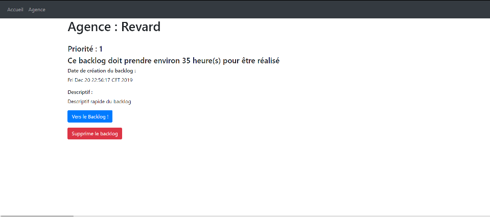

Le but de cette application est la gestion de backlog de différentes agences.
L'application permet de :
- Créer une agence
- Voir toute les agences créer
- Sélectionner une agence pour ainsi lui créer un backlog
- Créer des userstorys dans ce backlog
- Et de créer des commentaires pour des userstorys
Attention, Les colonnes n'ont pas était implémenté, car après plusieurs essaies pour les afficher correctement, nous n'arrivions pas à avoir un résultat satisfaisant
Dans un premier temps, nous avons choisi de réalisé une authentification pour savoir quel utilisateur est en train d'utiliser l'application (utile pour les commentaires, nous verrons celà plus bas).
Sur cette page, nous pouvons créer une agence en lui attribuant un nom. Puis en dessous, nous pouvons voir toute les agences créer. Pour chaque agence, nous pouvons accéder à ses détails, ou supprimer l'agence.
Lorque nous arrivons sur les détails de l'agence. Ici l'agence étant fraichement créé, elle ne possède pas encore de backlog (sinonnous serions directement arrivé à l'image suivant). Le logiciel nous propose donc de le créer. Il faudra renseigner une priorité pour ce backlog, une estimation de temps en heure, ainsi qu'un descriptif du backlog.
Une fois tous cela renseigné, nous arrivons sur la page des détails de l'agence. Cette dernière nous permet de visualiser les informations précédemment renseigné. Et nous donne un accès vers la page du backlog.
Sur cette page, nous avons 2 fonctionnalités :
- Nous pouvons créer une userstory en lui donnant un nom
- Nous pouvons également voir et consulter (en cliquant sur le bouton "Voir les commentaires") les userstorys du backlog
Sur cette dernière page, nous pouvons dans un premier temps créer un commentaire, mais également voir tout les commentaires déjà présent sur cette userstory. A chaque commentaire est associé, une date ainsi que le nom de l'utilisateur l'ayant posté. L'application connais votre nom puisque c'est grâce à ce dernier que vous avez pu vous authentifier.